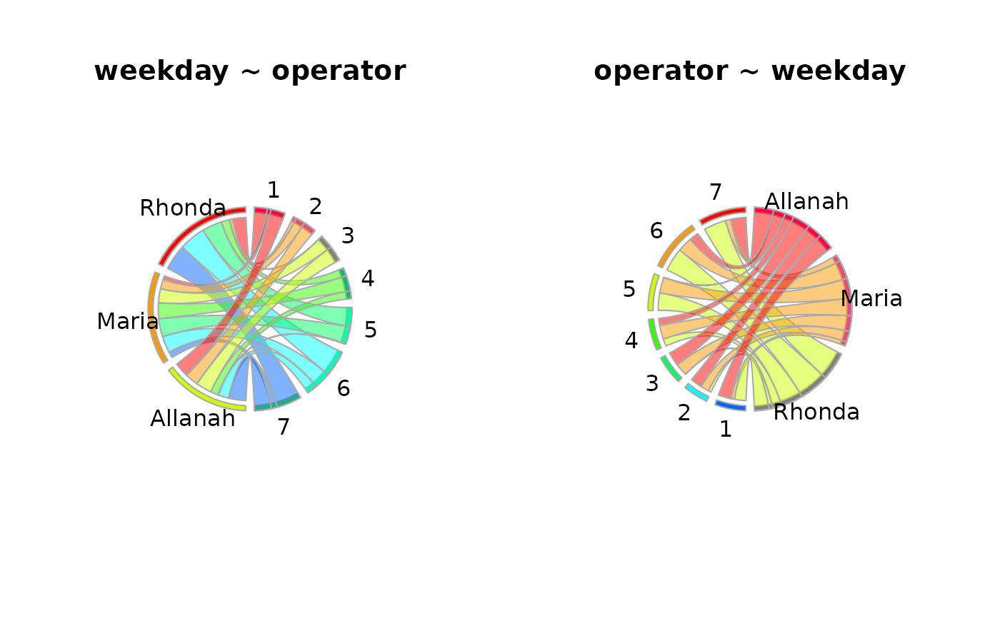
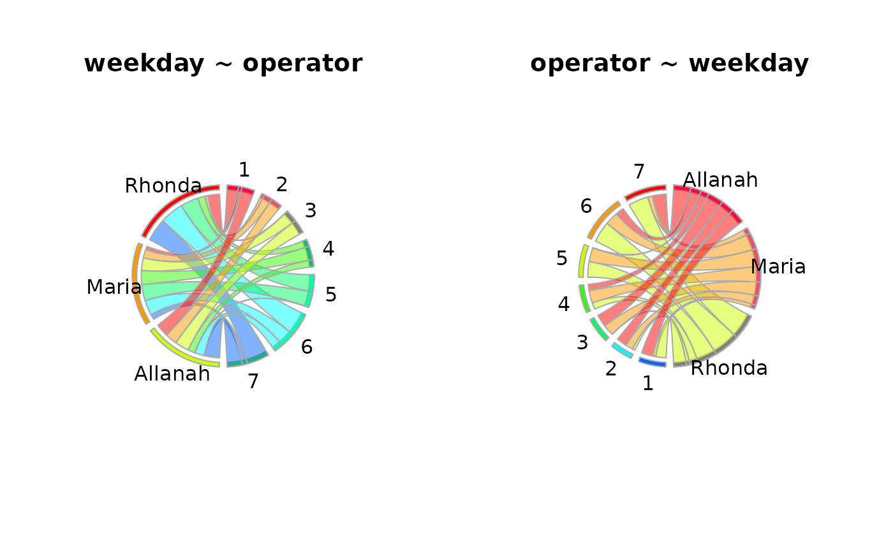

Plot Circular Plot
PlotCirc.RdThis visualising scheme represents the unidirectional relationship between the rows and the columns of a contingency table.
Arguments
- tab
a table to be visualised.
- acol
the colors for the peripheral annuli.
- aborder
the border colors for the peripheral annuli.
- rcol
the colors for the ribbons.
- rborder
the border colors for the ribbons.
- gap
the gap between the entities in degrees.
- main
the main title, defaults to "".
- labels
the labels. Defaults to the column names and rownames of the table.
- las
alignment of the labels, 1 means horizontal, 2 radial and 3 vertical.
- adj
adjustments for the labels. (Left: 0, Right: 1, Mid: 0.5)
- dist
gives the distance of the labels from the outer circle. Default is 2.
- cex.lab
the character extension for the labels.
Details
The visual scheme of representing relationships can be applied to a table, given the observation that a table cell is a relationship (with a value) between a row and column. By representing the row and columns as segments along the circle, the information in the corresponding cell can be encoded as a link between the segments. In general, the cell represents a unidirectional relationship (e.g. row->column) - in this relationship the role of the segments is not interchangeable (e.g. (row,col) and (col,row) are different cells). To identify the role of the segment, as a row or column, the ribbon is made to terminate at the row segment but slightly away from the column segment. In this way, for a given ribbon, it is easy to identify which segment is the row and which is the column.
Value
the calculated points for the labels, which can be used to place userdefined labels.
References
Inspired by http://circos.ca/presentations/articles/vis_tables1/
See also
Examples
tab <- matrix(c(2,5,8,3,10,12,5,7,15), nrow=3, byrow=FALSE)
dimnames(tab) <- list(c("A","B","C"), c("D","E","F"))
tab
#> D E F
#> A 2 3 5
#> B 5 10 7
#> C 8 12 15
PlotCirc( tab,
acol = c("dodgerblue","seagreen2","limegreen","olivedrab2","goldenrod2","tomato2"),
rcol = SetAlpha(c("red","orange","olivedrab1"), 0.5)
)
 tab <- table(d.pizza$weekday, d.pizza$operator)
par(mfrow=c(1,2))
PlotCirc(tab, main="weekday ~ operator")
PlotCirc(t(tab), main="operator ~ weekday")

tab <- table(d.pizza$weekday, d.pizza$operator)
par(mfrow=c(1,2))
PlotCirc(tab, main="weekday ~ operator")
PlotCirc(t(tab), main="operator ~ weekday")
